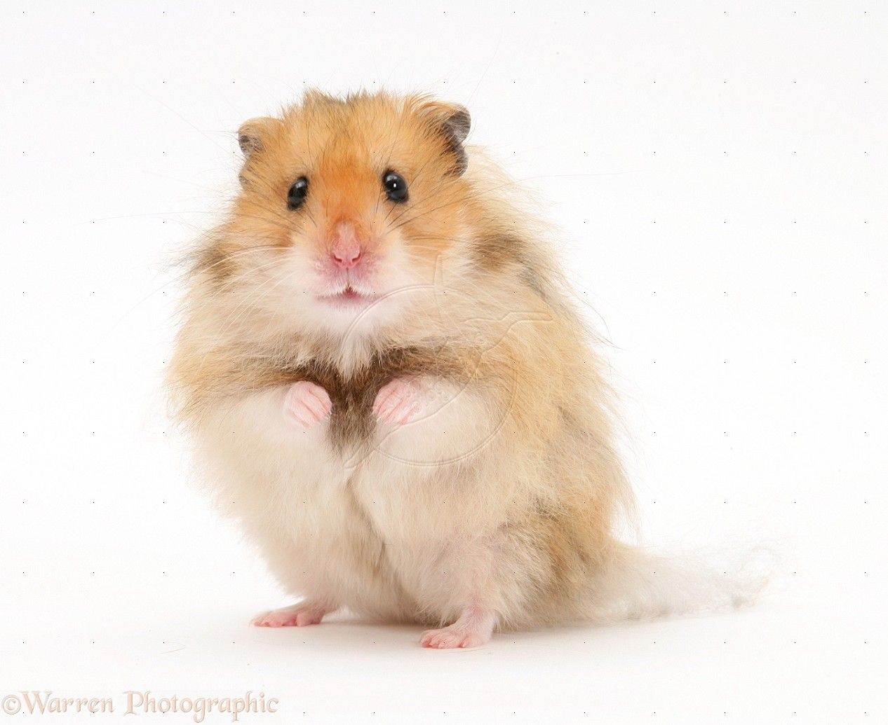
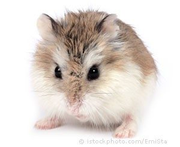

Adorable Animals
Home
Puppies
Kittens
Hamsters
Organizations
Hamsters
Long Haired Syrian
Fun Facts:
Syrians are one of the largest species of hamsters with an average length of 6 inches.
Long Haired Syrian hamsters are nicknamed "Teddy Bear" hamsters because of their longer fur.

Roborovski
They are the fastest dwarf hamster and can run over 100 miles in a single night.
They are also the smallest dwarf hamster with an average length of 2.5 inches.

 Adorable AnimalsAdorable Animals
Adorable AnimalsAdorable Animals